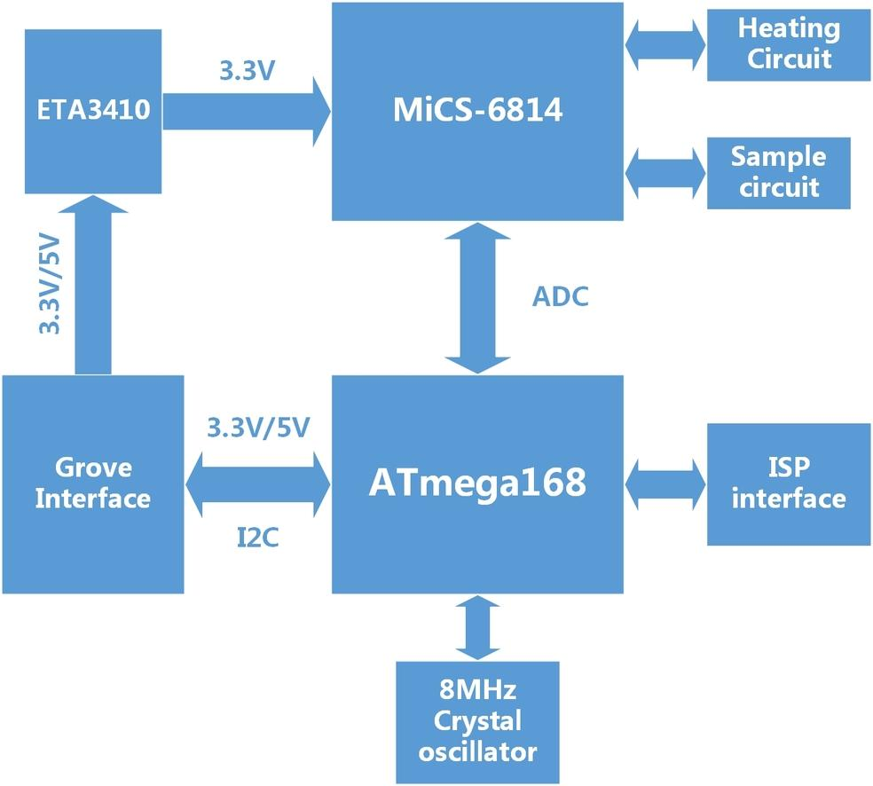
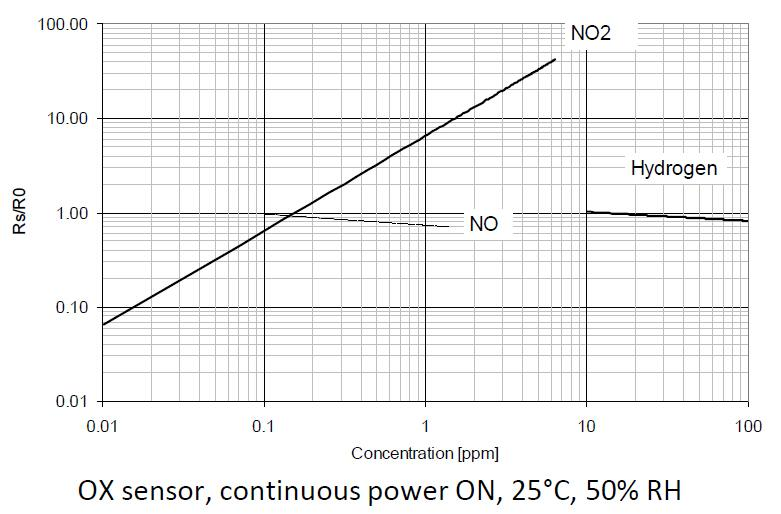
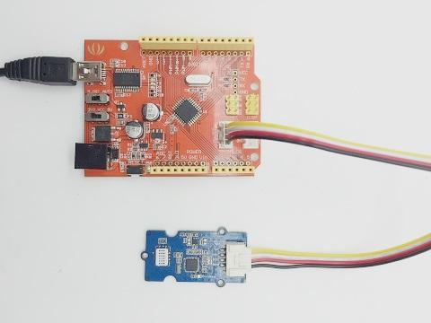
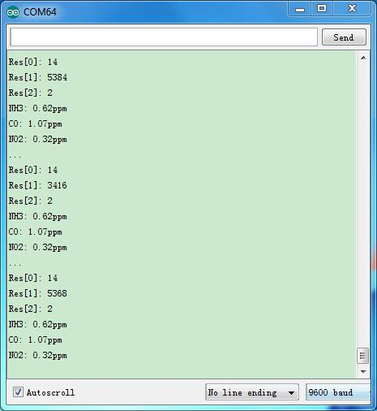

Grove – Multichannel Gas sensor is a environment detecting sensor with a built in MiCS-6814 which can detect many unhealthful gases, and three gases can be measured simultaneously due to its multi channels, so it can help you to monitor the concentration which more than one gas.
This sensor is belong to Grove system, and you can plug it onto the Base shield and work with Arduino directly without any jumper wires. The interface of it is I2C, so plug it onto the I2C port of Base shield, then you can start to work it.
Note that The sensor value only reflects the approximated trend of gas concentration in a permissible error range, it DOES NOT represent the exact gas concentration. The detection of certain components in the air usually requires a more precise and costly instrument, which cannot be done with a single gas sensor. If your project is aimed at obtaining the gas concentration at a very precise level, then we do not recommend this gas sensor.
We suggest you to read those knowledge before using the Gas sensor, it'll help you to learn more about Arduino and our products, and also it'll let you to use open souse hardware more easier.
After reading that you will know how to use Base shield with Grove products to work well with Arduino. Let's start it !
This tutorial will include some necessary products:
| Pin Label | Description |
|---|---|
| GND | Connect to ground |
| VCC | Power supply: 3.3v - 5v |
| SDA | I2C data |
| SCL | I2C clock |
The power supply is between 3.3v and 5v, so this sensor can be compatible with a micro-controller whose output voltage is 3.3v.

| Item | Condition | Min. | Typ. | Max. | Unit |
|---|---|---|---|---|---|
| Voltage | - | 3.1 | 3.3 | 5.25 | V |
| Ripple | @Max Power | - | 80 | 100 | mV |
| Heating Power | - | - | - | 88 | mW |
| Max Power | - | - | - | 150 | mW |
| ADC Precision | - | - | 10 | - | Bits |
| I2C Rate | - | - | 100 | 400 | kHz |
| VIL | @I2C | -0.5 | - | 0.99 | V |
| VIH | @I2C | 2.31 | - | 5.25 | V |
| Characteristic RED sensor | Symbol | Typ | Min | Max | Unit |
|---|---|---|---|---|---|
| Sensing resistance in air | R0 | - | 100 | 1500 | kΩ |
| Typical CO detection range | FS | - | 1 | 1000 | ppm |
| Sensitivity factor | SR | - | 1.2 | 50 | - |

| Characteristic OX sensor | Symbol | Typ | Min | Max | Unit |
|---|---|---|---|---|---|
| Sensing resistance in air | R0 | - | 0.8 | 20 | kΩ |
| Typical NO2 detection range | FS | - | 0.05 | 10 | ppm |
| Sensitivity factor | SR | - | 2 | - | - |

| Characteristic NH3 sensor | Symbol | Typ | Min | Max | Unit |
|---|---|---|---|---|---|
| Sensing resistance in air | R0 | - | 10 | 1500 | kΩ |
| Typical NH3 detection range | FS | - | 1 | 300 | ppm |
| Sensitivity factor | SR | - | 1.5 | 15 | - |

This grove module has an ATMega168 MCU which is flashed with a factory firmware. The firmware does the following works:
Note: the calibration has been done before the modules leave the factory. If you want to recalibrate, please do make sure that the air condition is fresh.
The library reads resistance values from the module and calculate the concentration of gas. One thing must be noticed is, the readings of this sensor are not supposed to be used to distinguish the type of gases, but to measure the concentration of a specific gas which is known to be that kind of gas.
The cores of this sensor are more sensitive to CO, NO2 and NH3, the precision of measurement for other gases would be worse.
Note: doCalibrate() function will take 8 seconds before it returns, as said above, at most time you don't need to recalibrate the sensor.
Hardware Installation:

Upload Code:
The content of ReadSensorValue_Grove.ino please refer to below.
/*
This is a demo to test MutichannelGasSensor library
This code is running on Xadow-mainboard, and the I2C slave is Xadow-MutichannelGasSensor
There is a ATmega168PA on Xadow-MutichannelGasSensor, it get sensors output and feed back to master.
the data is raw ADC value, algorithm should be realized on master.
please feel free to write email to me if there is any question
Jacky Zhang, Embedded Software Engineer
qi.zhang@seeed.cc
17,mar,2015
*/
#include <Wire.h>
#include "MutichannelGasSensor.h"
void setup()
{
Serial.begin(9600); // start serial for output
Serial.println("power on!");
mutichannelGasSensor.begin(0x04);//the default I2C address of the slave is 0x04
//mutichannelGasSensor.changeI2cAddr(0x10);
//mutichannelGasSensor.doCalibrate();
//delay(8000);
while(mutichannelGasSensor.readR0() < 0)
{
Serial.println("sensors init error!!");
delay(1000);
}
Serial.print("Res0[0]: ");
Serial.println(mutichannelGasSensor.res0[0]);
Serial.print("Res0[1]: ");
Serial.println(mutichannelGasSensor.res0[1]);
Serial.print("Res0[2]: ");
Serial.println(mutichannelGasSensor.res0[2]);
mutichannelGasSensor.powerOn();
}
void loop()
{
mutichannelGasSensor.readR();
Serial.print("Res[0]: ");
Serial.println(mutichannelGasSensor.res[0]);
Serial.print("Res[1]: ");
Serial.println(mutichannelGasSensor.res[1]);
Serial.print("Res[2]: ");
Serial.println(mutichannelGasSensor.res[2]);
mutichannelGasSensor.calcGas();
Serial.print("NH3: ");
Serial.print(mutichannelGasSensor.density_nh3);
Serial.println("ppm");
Serial.print("CO: ");
Serial.print(mutichannelGasSensor.density_co);
Serial.println("ppm");
Serial.print("NO2: ");
Serial.print(mutichannelGasSensor.density_no2);
Serial.println("ppm");
delay(1000);
Serial.println("...");
}
Arduino environment, and select the correct serial port Arduino is using.
By opening the serial monitor, you can see the raw data read from sensor.
